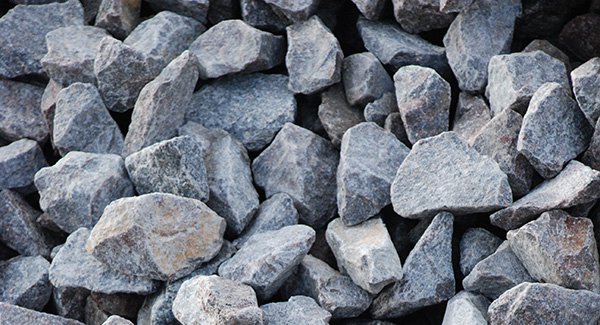

Щебень — неорганический, зернистый, сыпучий материал с зёрнами размером свыше 5 мм (по европейским стандартам — более 3 мм), получаемый дроблением горных пород, гравия и валунов.
- Прочность породы М800-М1000;
- Лещадность(форма частиц) 7-17%, одна из самых важных характеристик. Наиболее предпочтительной формой является кубовидная, поскольку плоские частицы неплотно будут прилегать друг к другу. Это позволяет снижать плотность насыпи;
- Плотность — 2400 м/кг3;
- Морозоустойчивость F150. Отлично переносит до 150 периодов оттаивания и замораживания;
- Не имеют посторонних вредных примесей;
- Насыпная плотность у разных фракций, как правило, не отличается. Обычно она составляет около 1,3 тонн, но возможно и меньше, так как данная характеристика будет зависеть от происхождения или же места его добычи.
Технические характеристики щебня
Фракции щебня
- до 5 мм. Отсев гравия обычно используется для предотвращения гололеда или же ландшафтных работ, так как очень мелок;
- до 10 мм. Основное использование — производство бетона, ландшафтные работы, постройка фундамента;
- до 20 мм. Является наиболее востребованным. Основное использование — производство цемента, изделий из него, возведение фундамента;
- до 40 мм. Основное использование, как и в других случаях, — это фундаментные работы, производстве бетона, изделий из него. Дополнительно требуется для дренажных работ;
- до 70 или до 90 мм. Необходим как для предыдущих целей, так и для декоративных целей. Широко применим в строительстве дорог;
- до 150 мм. Данная фракция имеет свое название — БУТ. Очень редкий вид, применяется для декоративных целей, а так же в качестве основного материала для отделки прудов, бассейнов, водостоков или побережий рек.